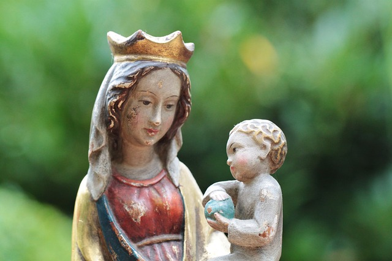

Paroisse Notre Dame de l'Assomption
Ham
Ham

- Equipe Liturgique
- Equipe Biblique
- Equipe du Rosaire
- Equipe du Chapelet
- Pélerinages
- Animation musicale
- Juste quelques fleurs...
- CLER
- Centre de Préparation au Mariage
- Aumonerie hospitalière
Equipe Liturgique
L’Equipe Liturgique est composée de quelques personnes qui préparent deux fois par trimestre la messe du dimanche dont elles lisent et méditent ensemble les lectures proposées.
En lien avec les animateurs de chant, elle prévoit l’animation de la liturgie : en particulier la Prière Universelle, les chants qui seront retenus, ainsi que les gestes qui seront éventuellement mis en valeur en accord avec le prêtre. Elle peut aussi prévoir, si elle le juge bon, une introduction à la célébration dominicale.
Equipe Biblique
page en cours de construction...
Equipe du Rosaire
Une équipe de Rosaire est un groupe de personnes d’un même quartier, d’un même immeuble, d’un même village qui se retrouve dans l’amitié et la convivialité pour prier.
En présence de Marie, c’est Dieu qui réunit une équipe du Rosaire : son Esprit de communion réalise ce mystère ! Et c’est une grâce de permettre de prier ensemble à des personnes socialement et culturellement très différentes.
Chaque mois l’équipe se réunit dans la maison de l’un ou l’autre membre pour une prière commune. Nous lisons ensemble le livret « Le Rosaire en équipe », méditons le passage de l’évangile, chantons, mettons en commun nos réflexions sur les thèmes proposés chacun avec nos mots, prions pour les intentions qui nous sont chères. La prière personnelle : dans le prolongement de la prière mensuelle chaque jour chez nous, nous méditons un Mystère du Rosaire, en lien les uns avec les autres grâce au calendrier d’équipe, suivi d’une dizaine de chapelet. C’est l’ensemble des prières quotidiennes de tous les membres de notre Mouvement qui fait que des milliers de Rosaires entiers sont médités dans la journée. C’est un mouvement missionnaire.
Si vous voulez vous joindre à une équipe ou en créer une dans votre secteur vous pouvez contacter :
Equipe du Chapelet
page en cours de construction...
Pélerinages
page en cours de construction...
Animation musicale
page en cours de construction...
Juste quelques fleurs...
Une équipe de bénévoles prend plaisir à décorer nos églises de compositions florales et souhaiterait trouver d'autres membres : chacun peut participer!
Ainsi, avec l'arrivée du printemps, nous vous proposons de nous envoyer une photo de votre création végétale et nous la publierons sur cette page.
Qui contacter ?
Présentation générale
- Le CLER est une association loi 1901
- reconnue d’utilite publique
- membre du conseil supêrieur d’information sexuelle
- membre de l’association nationale des conseillers conjugaux et familiaux
- Membre du conseil famille et sociétè de la conférence des évêques de France
- Agrée jeunesse et éducation populaire
- Agrée organisme de formation pour le conseil conjugal et familial et l’éducation à la vie
- membre de la pastorale familiale
Présentation de l’action
Le CLER Amour et Famille, association reconnue d'utilité publique, œuvre pour l’épanouissement affectif et familial de toute personne, jeune ou adulte, en couple ou non.L’ensemble des missions du CLER Amour et Famille, en particulier auprès des couples, des familles, des jeunes, crée et renforce le lien social. Il en résulte pour les intéressés un meilleur équilibre et une meilleure implication dans les différents secteurs de leur vie familiale, professionnelle, sociétale.
Les membres du CLER Amour et Famille, chrétiens ou non, ont une vision positive de l’homme, de l’amour humain et de la sexualité, qui s’appuie sur des valeurs humanistes (respect de soi, des autres, de la liberté intérieure, solidarité…). Grâce à une formation rigoureuse, et une organisation et des moyens s’appuyant sur un réseau d’équipes réparties sur le territoire national, ils interviennent dans des activités de Conseil Conjugal et Familial, d’Education Affective et Sexuelle, d’animation d’équipes de couples, de jeunes ou de groupes de parole, et autour de l’expertise sur les méthodes de planification naturelle. De nombreuses autres actions sont menées en partenariat avec d’autres organismes missions.
Comment faire? Qui contacter?
Dans la Somme, il y a une équipe à Amiens et une à Ham /Nesle /Péronne.Responsable: Anne Marie Vilt
- Conseils conjugaux et familiaux : 03.23.81.04.80 ou 06.22.71.70.92 ou tienmarie.vilt@wanadoo.fr
- Consultations de conseil conjugal et familial à l’hôpital de Ham : 06.22.71.70.92
- Interventions en éducation sexuelle affective et relationnelle à la demande des établissements scolaires
- Point écoute en établissement scolaire
Pour plus d’informations : site du CLER
Vous avez passé beaucoup de temps, pour acquérir un savoir-faire professionnel, pour vous entrainer à un sport d'athlétisme ou d'équipe, pour jouer d'un instrument de musique, pour pratiquer une langue étrangère.
Alors pour vous engager dans le mariage, pour construire votre couple et votre famille, prenez aussi le temps de vous préparer.
Le Centre de Préparation au Mariage du Diocèse d’Amiens vous propose :
- de parler de votre amour, de votre vie à deux,
- de votre mariage et de votre projet de couple,
- de découvrir l'importance du mariage civil,
- de réfléchir à la dimension chrétienne de votre futur engagement.
"Notre Eglise accueille avec joie tous ceux qui demandent son aide pour préparer leur mariage. (...) Dans le mariage, Dieu s'engage avec vous, l'Eglise vous accompagne. Par la force du sacrement, le Christ marche avec les époux et leur annonce chaque jour cette bonne nouvelle : Il n'y a pas de plus grand amour que de donner sa vie pour ceux que l'on aime".
Futurs époux, nous vous invitons à préparer sérieusement cette démarche unique dans votre vie. Présentez-vous à l'Eglise un an à l'avance. Pendant cette année de préparation, vous réfléchirez aux différents aspects de votre engagement et vous partirez d'un nouvel élan dans la vie chrétienne.
Les dates des prochaines sessions de préparation au mariage :
- les vendredis 10 et 17 avril au presbytère de Ham, de 20h00 à 23h00
- les vendredis 15 et 22 mai au presbytère de Ham, de 20h00 à 23h00
- les vendredis 5 et 12 juin à la salle paroissiale de Nesle, de 20h00 à 23h00
- Fédération nationale des Centres de Préparation au Mariage : site du CPM
- vers le sacrement du mariage
L'aumonerie hospitalière
L'équipe compte dix membres : 2 hommes et 8 femmes qui se retrouvent chaque jeudi matin pour visiter les malades des différents services. Quatre personnes visitent la médecine et le moyen séjour. Les six autres visitent les différents secteurs de la maison de retraite. Ce groupe est rattaché à la Pastorale de la Santé.
Site officiel de la paroisse de Ham maintenu par paroisseNdaHam@gmail.com - dernière mise à jour le 06/04/2015 - pour nous contacter